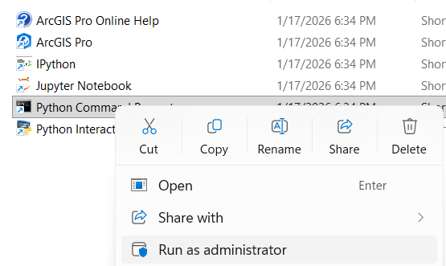
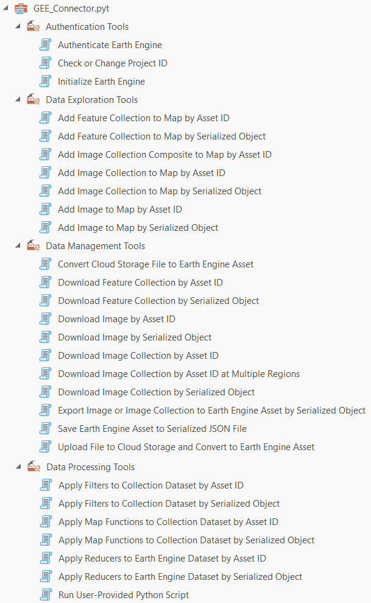
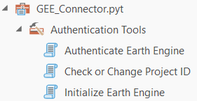
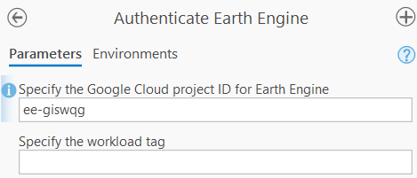

4 Guía de Instalación. Opción C: ArcGIS Pro y ArcPy
4.1 Instalación GEE en ArcGIS Pro
La guía resumida de instalación y uso se encuentra en el blog oficial de Esri.
Procedimiento y requerimientos:
- Contar con una licencia activa de ArcGIS Pro.
- Instalar la caja de herramientas siguiendo el procedimiento oficial.
- Descargar la caja de herramientas desde este enlace.
- Después de descomprimir el archivo, el procedimiento finaliza conectando la caja de herramientas a tu proyecto en ArcGIS Pro.
Configuración del ambiente Python con Conda
- Ejecutar ArcGIS Python Command Prompt como administrador: Ruta: Start Menu -> All Apps -> ArcGIS folder -> Python Command Prompt (Clic derecho > Ejecutar como administrador).

- Verificar los ambientes Conda disponibles:
conda env list- Clonar el entorno principal de ArcGIS Pro para no alterar el entorno por defecto:
conda create --name gee --clone arcgispro-py3Mensaje de salida apenas inicia la clonación:
Source: C:\Program Files\ArcGIS\Pro\bin\Python\envs\arcgispro-py3
Destination: D:\Programs\miniforge3\envs\gee- Inicializar Conda con el shell apropiado (opcional):
conda init cmd.exeReiniciar el Python Command Prompt (nuevamente como Administrador).
Activar el nuevo entorno
gee:
conda activate gee- Desactivar la verificación SSL (opcional, útil en redes corporativas restrictivas):
conda config --set ssl_verify false- Instalar los paquetes necesarios de GEE desde el canal
conda-forge:
conda install earthengine-api xee --channel conda-forgeAlternativa (Si el comando anterior falla): > Puedes usar
pippara instalar los paquetes limpiando el entorno e intentándolo de nuevo:conda deactivate conda env remove --name gee conda create --name gee --clone arcgispro-py3 conda activate gee pip install earthengine-api xee # Dependiendo de los warnings en consola, es posible que requieras estos paquetes: pip install "pyarrow>=17,<21" pywin32
- Instalar otros paquetes requeridos desde el canal oficial de
esri(dependiendo de tu versión):
- Para ArcGIS Pro 3.5 y anteriores:
conda install rasterio=1.3.9 --channel esri- Para ArcGIS Pro 3.6 y posteriores:
conda install rasterio=1.4.3 --channel esri- Intercambiar el entorno predeterminado de ArcGIS Pro para que use
geede ahora en adelante:
proswap gee- Cerrar el Python Command Prompt y abrir ArcGIS Pro.
- El ambiente por defecto ahora será
gee. - Verifica que los paquetes funcionen yendo a Analysis -> Python -> Python Window y ejecutando:
import ee
import xee
import rasterioDescargar la caja de herramientas (Toolbox)
Puedes clonar el repositorio mediante Git:
git clone https://github.com/gee-community/arcgis-earthengine-toolbox.gitAlternativamente, descarga el archivo .zip directamente desde GitHub y descomprímelo.
Opción A: Guardar la carpeta descargada directamente en el directorio de tu proyecto actual:
C:\Users\<username>\Documents\ArcGIS\Projects\<project_name>\ArcGIS Earth Engine ToolboxOpción B: Guardar la caja de herramientas en un directorio global para usarla en múltiples proyectos. Por ejemplo:
D:\Programs\ArcGIS\Pro\arcgis-earthengine-toolbox
Agregar la caja de herramientas GEE a ArcGIS Pro
- Abre ArcGIS Pro.
- En el panel Catalog (Catálogo), haz clic derecho en Toolboxes (Cajas de herramientas) y selecciona Add Toolbox (Agregar caja de herramientas).
- Navega a la ruta donde descomprimiste los archivos (ej:
D:\Programs\ArcGIS\Pro\arcgis-earthengine-toolbox) y selecciona el archivo de la herramienta.

Consulta el procedimiento oficial de Esri si tienes dudas sobre cómo conectar una caja de herramientas.
Actualizar la caja de herramientas GEE (Opcional)
Si en el futuro requieres la versión más reciente del Toolbox, sigue el procedimiento descrito en la documentación oficial de actualizaciones.
Instalar Google Cloud SDK
Dado que GEE requiere validación en la nube de Google, necesitamos su herramienta de línea de comandos. Encuentra aquí la guía oficial de instalación de Google Cloud CLI.
- Selecciona o crea tu proyecto de Google Cloud en este enlace.
- Verifica que la facturación (Billing) esté habilitada para tu proyecto aquí. (Nota: GEE es gratuito, pero requiere tener facturación configurada como protocolo de Cloud).
- Descarga el instalador de Google Cloud CLI para Windows.
- Ejecuta el instalador y sigue las instrucciones en pantalla.
⚠️ Importante: Al finalizar, desmarca la opción de abrir la consola (Start Google Cloud SDK Shell).
- Abre una terminal de PowerShell y ejecuta:
gcloud init- Se abrirá una pestaña en tu navegador web. Ingresa con tu cuenta de Google.
- Después de autorizar, recibirás un mensaje similar a “You are now authenticated with the gcloud CLI”.
De regreso a tu consola de PowerShell:
- Te pedirá que indiques el número del proyecto que deseas utilizar (ej:
1). Recuerda seleccionar el proyecto que tiene la facturación habilitada. - Dirígete a este enlace de la Consola de APIs y asegúrate de tener tu proyecto seleccionado.
- Ve a la pestaña Enable API and Services.
- Busca Compute Engine API, selecciónala y presiona Enable. Esto permitirá a Google Cloud seleccionar una zona y región de cómputo automáticamente, optimizando el uso de recursos. (Debe aparecer activa en tu lista de APIs).
Credenciales para GEE
Una vez que Google Cloud SDK está instalado, GEE utilizará sus credenciales por defecto para autenticarte dentro de ArcGIS Pro.
- Encuentra tu Google Cloud Project ID:
- Recuerda que el
Project IDsuele ser diferente alProject Name(típicamente tiene un formato comomy-project-123456). - En la esquina superior derecha de la Consola de Google Cloud, haz clic en los tres puntos y selecciona Project settings. Allí podrás copiar tu
Project ID.
Abre la consola Google Cloud SDK Shell (búscala en el menú inicio de Windows).
Ejecuta el siguiente comando (esto se hace solo la primera vez):
gcloud auth application-default login- Sigue el proceso en el navegador web para otorgar permisos. Al terminar verás el mensaje: “You are now authenticated with the gcloud CLI!”.
- Esto creará un archivo de seguridad llamado
application_default_credentials.jsonen tu computador.
- Asocia tu cuota de proyecto a esas credenciales. Ejecuta este comando reemplazando
TU_PROJECT_IDcon el ID exacto de tu proyecto:
gcloud auth application-default set-quota-project TU_PROJECT_IDSi todo es correcto, recibirás una confirmación similar a:
Credentials saved to file: [C:\Users\tu_usuario\AppData\Roaming\gcloud\application_default_credentials.json]
4.2 Inicializar GEE en ArcGIS Pro
Una vez configurado el entorno y descargada la caja de herramientas, procede a inicializar Earth Engine dentro de la interfaz de ArcGIS Pro. Antes de usar cualquier función, debemos autenticar nuestra cuenta. En la caja de herramientas de GEE dentro de ArcGIS Pro, abra la sección Authentication Tools:

Paso A: Abra la herramienta Authenticate Earth Engine y escriba su Project ID (ej. ee-giswqg). Al ejecutar (Run) la herramienta y ver los detalles de la ejecución (View Details), deberá observar un mensaje de éxito como: Earth Engine is ready to use. Authentication successful.

Paso B: A continuación, abra la herramienta Initialize Earth Engine y escriba nuevamente su Project ID. Ejecute la herramienta; en los detalles observará el mensaje confirmando: Earth Engine is ready to use.
4.3 URLs y enlaces de referencia importantes
- Documentación oficial y tutoriales de Google Cloud SDK.
- Procedimiento completo de instalación del GEE Toolbox.
- Artículo de Esri: Cómo iniciar a trabajar con GEE en ArcGIS Pro.
4.4 Fuentes de datos alternativas en ArcGIS Pro
Aunque Earth Engine es muy potente, existen otras fuentes masivas de datos espaciales y catálogos en la nube que puedes aprovechar directamente en ArcGIS Pro:
🌐 ArcGIS Living Atlas of the World
- Totalmente integrado con ArcGIS Online y ArcGIS Pro (mediante la pestaña
Portalen el Catálogo). - Guía: ArcGIS Living Atlas ready-to-use imagery layers for analysis
- Guía: Explore Ready-to-Use Imagery for Analysis
- Totalmente integrado con ArcGIS Online y ArcGIS Pro (mediante la pestaña
📂 STAC Catalogs (SpatioTemporal Asset Catalogs)
- Permite conectar inmensas bases de datos abiertas, como el Microsoft Planetary Computer.
- Conecta la información estableciendo una conexión STAC en ArcGIS y aprovechando archivos .asc.
☁️ Cloud sources (Almacenamiento en la nube)
- Conecta entornos de almacenamiento masivo directamente al Catálogo de ArcGIS Pro vía URLs o APIs, como por ejemplo buckets de AWS (Amazon Web Services).
🌍 Google Earth Engine Data Catalog
- Operado mediante la caja de herramientas integrada.